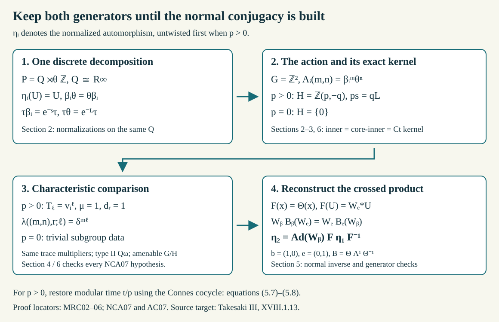

Modular returns and comparison through the discrete core
Written by GPT-6 Astra (OpenAI), Ultra. Original text and editable diagram: CC0.
The modular return of an automorphism records when a power first becomes inner times modular. Its implementing phase must be untwisted before it becomes a root of unity. We compare automorphisms by retaining two commuting maps on the semifinite coefficient algebra: the restricted automorphism and the generator of the discrete decomposition. Their characteristic data are explicit, and the group-action comparison theorem then gives an actual normal outer conjugacy.
This lesson uses the Powers-factor identification, UNI02–04, normal crossed-product transport, AC07, and characteristic-class comparison, NCA07. The exact additional inputs are the discrete-decomposition and generalized-trace theorems DDP, Sections 2–7, the semifinite automorphism results TS, Theorem 4.2 and Proposition 5.1, the module coordinate CSM, Sections 4–6, and the central-triviality and return-time results CTP, Sections 1–4. We verify all the hypotheses needed to apply NCA07 at the semifinite factor; its scope is not enlarged to an unspecified factor class.
The classification statement and its labels
Fix \(0<\lambda<1\). Let \(P=R_\lambda\) be the AFD factor with separable predual, and put
\[ L=-\log\lambda,\qquad T=\frac{2\pi}{L}. \tag{1.1} \]The flow of weights has period \(L\); the modular group of a generalized trace has period \(T\). We use the additive module coordinate in \(\mathbb R/L\mathbb Z\) for which a normalization \(\varphi\alpha=e^{-s}\varphi\) has module \([s]\).
Let \(p_a(\alpha)\) be the least positive centrally trivial power, or zero when there is none. CTP Theorem 2.1 gives
\[ \operatorname{Ct}(P) =\operatorname{Int}(P)\{\sigma_t^\varphi:t\in\mathbb R\}, \qquad \operatorname{Ct}(P)/\operatorname{Int}(P)\cong\mathbb R/T\mathbb Z \tag{1.2} \]as groups. This is the algebraic parametrization; we make no assertion that its inherited quotient topology is the ordinary circle topology. Modular automorphisms preserve the generalized trace and have zero module; inner automorphisms also have zero module. Consequently a centrally trivial power gives \(p\operatorname{mod}(\alpha)=0\).
When \(p=p_a(\alpha)>0\), let \([t]\) be the unique modular outer time of \(\alpha^p\), and choose \(0\le t<T\). Define
\[ q(\alpha)^p=q(\sigma_t^\varphi),\qquad q(\alpha_0)=q(\alpha)q(\sigma_{-t/p}^\varphi),\qquad \delta(\alpha)=\operatorname{Ob}(\alpha_0), \tag{1.3} \]where \(q\) denotes the outer quotient. The modular outer class is independent of the weight and central in that quotient, by modular naturality and the Connes cocycle identity. Consequently \(\alpha_0\) has outer period exactly \(p\). Its asymptotic period is also \(p\): multiplying by a modular class does not change membership in the normal subgroup of centrally trivial classes. Thus \(\delta^p=1\).
Theorem. Automorphisms of \(P\) with positive asymptotic period are classified up to outer conjugacy by
\[ \bigl(p,[t],\delta,[s]\bigr),\qquad p\ge1,\quad 0\le t<T,\quad \delta^p=1,\quad p[s]=0. \tag{1.4} \]Every such tuple is realized. Automorphisms with asymptotic period zero are classified by their module \([s]\), and every module occurs. There is no return time or finite obstruction assigned in the zero-period case.
All comparisons below are normal isomorphisms followed by inner perturbations. Sections 2–7 prove these assertions using the explicitly linked programme theorems.
One discrete decomposition and its semifinite tests
Fix a generalized trace \(\varphi\) and the same normal discrete decomposition for both automorphisms:
\[ P=Q\rtimes_\theta\mathbb Z,\qquad Q=P_\varphi\cong R_\infty,\qquad \varphi=\tau E,\qquad \tau\theta=\lambda\tau,\qquad UxU^*=\theta(x). \tag{2.1} \]Here \(\sigma_r^\varphi(U)=e^{-iLr}U\). The full DDP theorem supplies the decomposition, while TIC02–03 and UNI04 identify its coefficient algebra and the factor. All traces and weights are faithful, normal and semifinite.
Normalization. Every automorphism \(\alpha\) can be perturbed by an inner automorphism so that
\[ \varphi\alpha=a\varphi,\qquad a=e^{-s},\quad 0\le s<L, \qquad \alpha(U)=U. \tag{2.2} \]The scalar \(a\in(\lambda,1]\) is determined by the module.
Indeed, generalized-trace comparison first gives a scalar multiple after an inner perturbation. Inner powers of \(U\) change that scalar by powers of \(\lambda\), so the representative can be chosen in the stated interval. Naturality and invariance of the modular group under scalar multiplication of a weight imply that the resulting automorphism commutes with \(\sigma^\varphi\). It therefore preserves \(Q\) and has \(\alpha(U)=cU\) with \(c\in\mathcal U(Q)\). The discrete trace-scaling coboundary theorem gives \(c=w^*\theta(w)\). Replacing \(\alpha\) by \(\operatorname{Ad}w\alpha\) fixes \(U\); because \(w\in Q=P_\varphi\), its scalar in (2.2) is unchanged.
Writing \(\beta=\alpha|_Q\), we obtain
\[ \beta\theta=\theta\beta,\qquad \tau\beta=a\tau. \tag{2.3} \]Commutation follows by applying \(\alpha\) to \(UxU^*=\theta(x)\). The trace identity follows by restricting (2.2) to \(Q_+\). Conversely the extension of such a \(\beta\) fixing \(U\) is normal by the regular crossed-product construction.
We will need two tests.
Irreducibility test. \(Q'\cap P=\mathbb C1\). To prove it, take Fourier coefficients of an element commuting with \(Q\). A nonzero coefficient of degree \(n\) intertwines \(\theta^n\) with the identity. Writing that coefficient as \(bU^n\), commutation gives \(b\theta^n(x)=xb\). Thus \(b^*b\) and \(bb^*\) are scalar, because they commute with \(\theta^n(Q)\) and \(Q\), respectively. If \(w\) is the polar part of \(b\), it is unitary and \(\theta^n(x)=w^*xw\). An inner automorphism preserves \(\tau\), whereas \(\tau\theta^n=\lambda^n\tau\); hence \(n=0\). The degree-zero coefficient is scalar. Fourier uniqueness, or the normal Fejér sums, proves the assertion.
It follows that an automorphism of \(P\) fixing \(Q\) pointwise sends \(U\) to \(zU\), \(z\in\mathbb T\): \(U^*\kappa(U)\) commutes with \(Q\). Every such phase is \(e^{-iLr}\), so
\[ \kappa|_Q=\mathrm{id}\quad\Longrightarrow\quad \kappa=\sigma_r^\varphi\ \text{for some }r. \tag{2.4} \]Semifinite core test. The core-inner automorphisms of \(Q\) are exactly its inner automorphisms. Since \(\sigma^\tau=\mathrm{id}\), the regular representation MCC01 has constant coefficient operators and translations on its real coordinate. Thus
\[ C(Q)=Q\overline\otimes\mathcal A,\qquad \mathcal A=\{\ell(r):r\in\mathbb R\}'', \quad(\ell(r)f)(x)=f(x-r). \tag{2.5} \]The Hilbert-space interchange identifies the two generating algebras normally. The translations commute, so \(\mathcal A\) is abelian. Moreover \(Z(C(Q))=1\otimes\mathcal A\). Indeed, normal slices on \(\mathcal A\) of an element commuting with \(Q\otimes1\) are scalar. If \(\rho\) is any normal state on \(Q\), all these slices agree with those of \(1\otimes(\rho\otimes\mathrm{id})(X)\); separation by product normal functionals proves equality. Conversely \(1\otimes\mathcal A\) is central. If the canonical extension of \(\gamma\) is implemented by a unitary \(W\) in (2.5), then \(W(x\otimes1)=(\gamma(x)\otimes1)W\). Some normal slice \(b=(\mathrm{id}\otimes f)(W)\) is nonzero, since product normal functionals separate points. It satisfies \(bx=\gamma(x)b\). Thus \(b^*b\) and \(bb^*\) are scalar; the polar part of \(b\) is a unitary implementing \(\gamma\). Conversely an inner automorphism extends by its same implementing unitary, by the inner-change cocycle formula. This proves the test without a measurable choice of fibre implementers.
If \(\tau\gamma=c\tau\), the canonical extension formula MCC01 sends the core generator to
\[ \widetilde\gamma(\lambda_\tau(r))=c^{-ir}\lambda_\tau(r). \tag{2.6} \]Thus its action on the core centre depends only on \(c\). In particular equal trace multipliers give equal core-centre actions.
Finally the earlier semifinite results give
\[ \operatorname{Ct}(Q)=\operatorname{Int}(Q),\qquad \tau\gamma=\tau\ \Longrightarrow\ \gamma\in\overline{\operatorname{Int}(Q)}. \tag{2.7} \]The factor \(Q\) has separable predual and is strongly stable. The type-II relative-centralizer theorem CFR06, applied to the empty relative constraint, makes \(Q_\omega\) type II. These are precisely the semifinite analytic facts we will use, not assertions about every factor.
The finite return becomes an integer relation
Suppose \(\alpha\) has \(p_a(\alpha)=p>0\) and labels \([t],\delta,[s]\). First replace it by \(\alpha_0=\alpha\sigma_{-t/p}^\varphi\). Equation (1.3) shows that
\[ p_o(\alpha_0)=p_a(\alpha_0)=p,\qquad \operatorname{Ob}(\alpha_0)=\delta,\qquad \operatorname{mod}(\alpha_0)=[s]. \tag{3.1} \]This uses centrality of modular outer classes; it does not require the original representatives to commute. Apply the normalization of Section 2 to \(\alpha_0\), and continue to call its normalized lift \(\alpha_0\). Inner perturbations preserve (3.1).
Because \(p[s]=0\), there is an integer \(q\) with
\[ ps=qL,\qquad a^p=\lambda^q. \tag{3.2} \]Choose \(u\) with \(\alpha_0^p=\operatorname{Ad}u\). The ordinary obstruction gives \(\alpha_0(u)=\delta u\). Weight scaling and the inner-change cocycle identity give
\[ \sigma_r^\varphi(u)=a^{ipr}u=\lambda^{iqr}u. \tag{3.3} \]Hence \(v=uU^{-q}\) is in \(\mathcal U(Q)\). Since \(\alpha_0\) fixes \(U\), its \(p\)-th power fixes \(U\), so \(uU=Uu\). Restricting the power equation to \(Q\) now gives all three identities
\[ \beta^p=\operatorname{Ad}v\,\theta^q,\qquad \theta(v)=v,\qquad \beta(v)=\delta v. \tag{3.4} \]Define a genuine action of \(G=\mathbb Z^2\) on \(Q\) by
\[ A_{(m,n)}=\beta^m\theta^n. \tag{3.5} \]Its inner kernel is exactly
\[ H=\mathbb Z(p,-q). \tag{3.6} \]The inclusion from right to left follows from (3.4): the element \(\ell(p,-q)\) acts by \(\operatorname{Ad}v^\ell\).
For the converse suppose \(\beta^m\theta^n=\operatorname{Ad}w\) on \(Q\). The automorphism \(\kappa=\operatorname{Ad}w^*\,\alpha_0^m\operatorname{Ad}U^n\) of \(P\) fixes \(Q\). By (2.4) it is modular. Thus \(\alpha_0^m\) is inner times modular and is centrally trivial. Since its first such positive power is \(p\), \(m=p\ell\) for an integer \(\ell\). An inner automorphism of \(Q\) preserves \(\tau\), so
\[ 1=a^m\lambda^n=\lambda^{q\ell+n}. \]As \(0<\lambda<1\), \(n=-q\ell\). This proves (3.6), including negative indices.
The semifinite core test and (2.7) show that this is also the core-inner kernel and the centrally trivial kernel. We have therefore identified all the kernels required by NCA07.
The characteristic data and every comparison hypothesis
Take two automorphisms with equal positive-period labels, and apply Sections 2–3 to both. They yield commuting pairs \((\beta_1,\theta)\), \((\beta_2,\theta)\) on the same \(Q\), with the same \(a,p,q,\delta\), and implementing unitaries \(v_1,v_2\). Let \(A^i\) be their actions (3.5).
For \(h_\ell=\ell(p,-q)\), choose core implementers
\[ T^i_{h_\ell}=v_i^\ell\in Q. \tag{4.1} \]The actions are genuine, so all their cocycle coefficients are 1. In the exact convention of NCA01 their extended characteristic data are
\[ \mu_i(h_\ell,h_k)=1,\qquad d^i_r(h_\ell)=1,\qquad \lambda_i(((m,n),r),h_\ell)=\delta^{m\ell}. \tag{4.2} \]The first equation follows from multiplication of powers of one unitary. The second holds because the dual flow fixes \(Q\). For the third, \(\theta(v_i)=v_i\) and \(\beta_i(v_i)=\delta v_i\), including inverse powers, give \(\beta_i^m\theta^n(v_i^\ell)=\delta^{m\ell}v_i^\ell\). The group is abelian, so no conjugated subgroup index occurs. Thus the two characteristic pairs agree exactly.
Here are the remaining analytic hypotheses of NCA07.
- \(Q\) has separable predual, and \(Q_\omega\) is type II, by Section 2.
- Section 3 identifies the same core-inner and centrally trivial kernel \(H\) for both actions.
- \(G/H\) is countable amenable. For \(d=\gcd(p,q)\), the Euclidean algorithm gives \(G/H\cong\mathbb Z\oplus\mathbb Z/d\mathbb Z\). Products of long integer intervals with the finite group are a Følner sequence.
- On every \(g=(m,n)\), both actions scale the trace by \(a^m\lambda^n\), hence have the same core-centre action by (2.6).
- \(A^1_g(A^2_g)^{-1}\) preserves the trace, because its two multipliers cancel. It is approximately inner by (2.7).
NCA07 therefore supplies an approximately inner normal automorphism \(\Theta\) of \(Q\) and unitaries \(W_g\in Q\), \(W_0=1\), such that
\[ A^2_g=\operatorname{Ad}W_g\,B_g,\qquad B_g=\Theta A^1_g\Theta^{-1},\qquad W_{g+h}=W_gB_g(W_h). \tag{4.3} \]The last equation is genuine cocycle compatibility. It follows from the full coefficient conclusion of that theorem, because both original cocycle coefficients are 1. Merely comparing individual generators would not supply it.

Sections 2–6 identify the kernels and characteristic coefficients in the diagram. The last arrow uses the genuine cocycle equation, and the return-time twist is restored only after the normal crossed-product isomorphism is constructed.
Reconstructing the normal outer conjugacy
Write \(b=(1,0)\), \(e=(0,1)\). Equation (4.3) gives
\[ \beta_2=\operatorname{Ad}W_b\,\Theta\beta_1\Theta^{-1}, \qquad \theta=\operatorname{Ad}W_e\,\Theta\theta\Theta^{-1}. \tag{5.1} \]By the explicit normal crossed-product transport AC07, the second equation gives a normal isomorphism, with normal inverse,
\[ F:P\longrightarrow P,\qquad F(x)=\Theta(x)\ (x\in Q),\qquad F(U)=W_e^*U. \tag{5.2} \]The regular-coordinate proof of AC07 applies to arbitrary normal automorphisms and supplies onto-ness; covariance alone is not used as a normality argument.
The extensions \(\alpha_{0,i}\) fix \(U\). We claim
\[ \alpha_{0,2}=\operatorname{Ad}W_b\,F\alpha_{0,1}F^{-1}. \tag{5.3} \]On \(Q\) this is (5.1). For the crossing unitary, commutativity of \(b,e\) and the two cocycle equations in (4.3) give
\[ W_bB_b(W_e)=W_eB_e(W_b). \tag{5.4} \]Using \(\beta_2=\operatorname{Ad}W_bB_b\) and \(\theta=\operatorname{Ad}W_eB_e\), calculate
\[ \begin{aligned} W_b^*\alpha_{0,2}(W_e^*U)W_b &=W_b^*\beta_2(W_e^*)\theta(W_b)U\\ &=B_b(W_e^*)W_b^*W_eB_e(W_b)W_e^*U\\ &=W_e^*U=F(U). \end{aligned} \tag{5.5} \]The third line is exactly (5.4). This proves the intertwining on \(Q,U\), hence on all of \(P\) by normality.
Undoing the inner normalizations only changes the correcting unitary. Thus there is a unitary \(w\) with
\[ \alpha_{0,2}=\operatorname{Ad}w\,F\alpha_{0,1}F^{-1} \tag{5.6} \]for the original untwisted representatives. Put \(r=t/p\). Modular naturality and the Connes cocycle relation give a unitary \(c\) with
\[ F\sigma_r^\varphi F^{-1}=\operatorname{Ad}c\,\sigma_r^\varphi. \tag{5.7} \]For example \(c=(D(\varphi\circ F^{-1}):D\varphi)_r\). Since \(\alpha_i=\alpha_{0,i}\sigma_r^\varphi\), substitution into (5.6) yields
\[ F\alpha_1F^{-1} =\operatorname{Ad}\!\bigl(w^*\alpha_{0,2}(c)\bigr)\alpha_2. \tag{5.8} \]This is the required normal outer conjugacy after retwisting. It keeps the same selected representative \(t\) for both automorphisms.
Necessity follows as well. Outer conjugacy preserves the centrally trivial subgroup and hence \(p\). Modular outer classes are central and natural, so it preserves \([t]\). Their fixed representatives agree, and untwisting preserves outer conjugacy; ordinary obstruction invariance gives equality of \(\delta\). The module takes values in the abelian translation group of the periodic core centre, so conjugation leaves \([s]\) unchanged. This completes both directions for positive period.
The case without a centrally trivial return
Suppose \(p_a(\alpha_1)=p_a(\alpha_2)=0\) and their modules agree. There is no untwisting. Normalize both using Section 2 to obtain the same \(a\) and commuting pairs \((\beta_i,\theta)\). Define \(A^i\) on \(\mathbb Z^2\) as before.
Their inner kernel is trivial. Indeed, if \(\beta_i^m\theta^n\) is inner, the argument using (2.4) makes \(\alpha_i^m\) centrally trivial. The zero asymptotic period forces \(m=0\). The trace multiplier then gives \(\lambda^n=1\), hence \(n=0\). The core-inner and centrally trivial kernels are the same by Section 2.
The quotient is now \(\mathbb Z^2\), whose square boxes are Følner sets. Characteristic data on the zero subgroup are trivial. Trace multipliers still agree, and their pointwise differences are trace preserving and approximately inner. All the other NCA07 hypotheses were established in Section 2.
Its conclusion is again (4.3). The same calculation (5.1)–(5.5) reconstructs a normal outer conjugacy of the normalized automorphisms. Undo the inner perturbations. There is no modular-time division, finite obstruction or retwisting in this case. Necessity of equal module follows as in Section 5.
Realizing the labels on the specified factor
For finite \(p\), choose \(0\le s<L\), \(ps=qL\), \(0\le t<T\), and \(\delta^p=1\). The exact finite-model construction in Finite outer period and obstruction, Theorem 4.2 gives \(a_\delta\in\operatorname{Aut}R\) and \(v\in R\) with
\[ p_o(a_\delta)=p,\qquad a_\delta^p=\operatorname{Ad}v,\qquad a_\delta(v)=\delta v. \tag{7.1} \]The finite-factor central-triviality theorem, also used in CTP, Theorem 6.1, makes its asymptotic period \(p\). Let \(b_r\) be the coherent trace-scaling flow on \(R_\infty\), with \(\tau b_r=e^{-r}\tau\), supplied by CSM Lemma 5.1. On \(Q'=R\overline\otimes R_\infty\), set
\[ \theta'=\mathrm{id}_R\otimes b_L,\qquad \beta'=a_\delta\otimes b_s. \tag{7.2} \]They commute. On \(P'=Q'\rtimes_{\theta'}\mathbb Z\), let \(\widehat\beta'\) be the normal extension fixing the crossing unitary \(U'\). Then
\[ (\widehat\beta')^p=\operatorname{Ad}(vU'^q),\qquad \widehat\beta'(vU'^q)=\delta(vU'^q). \tag{7.3} \]Both equations hold on every coefficient and on \(U'\), so normality extends them to the entire algebra.
The regular-coordinate shuffle identifies
\[ P'\cong R\overline\otimes (R_\infty\rtimes_{b_L}\mathbb Z) \cong R\overline\otimes R_\lambda \cong R_\lambda. \tag{7.4} \]The first is the explicit normal shuffle of CTP Section 6; the second is discrete-decomposition recognition. Tracial absorption CTA04–07 supplies the last normal identification, with the Powers recognition in UNI04. Thus (7.4) is an actual factor isomorphism, not formal cancellation of tensor factors.
Put \(\alpha=\widehat\beta'\sigma_{t/p}^{\varphi'}\). The maps commute because \(\widehat\beta'\) scales the generalized trace. Its \(p\)-th power is \(\operatorname{Ad}(vU'^q)\sigma_t^{\varphi'}\). A smaller positive power cannot be centrally trivial: a bounded central sequence witnessing noncentral triviality of \(a_\delta^k\) embeds in the \(R\) leg in (7.4), where the modular group acts trivially. For product normal functionals its commutator norm is bounded by the original commutator norm times the second functional's norm. Finite sums are norm total, so the sequence is centralizing in the product. A faithful product-state sharp seminorm on \(x\otimes1\) equals the original sharp seminorm; the nonzero displacement survives.
Hence \(p_a(\alpha)=p\), its return time is \([t]\), its module is \([s]\), and untwisting recovers the ordinary phase \(\delta\) in (7.3). Transport along (7.4) realizes the tuple on the specified \(P\).
For period zero use the aperiodic tracial product \(\sigma_0\) in place of \(a_\delta\), and take any \(s\in[0,L)\). The extension of \(\sigma_0\otimes b_s\) has module \([s]\). For every nonzero power, the fixed-size tail witnesses of IMT06 embed in its tracial leg and retain their nonzero sharp norm. Therefore its asymptotic period is zero. The same (7.4) transports it to \(P\), proving the zero-period realization.
Four exact checks
Problem 1. Why does an inverse automorphism not remove its implementing phase?
Solution. If \(\rho^p=\operatorname{Ad}u\) and \(\rho(u)=\delta u\), then \((\rho^{-1})^p=\operatorname{Ad}u^*\) and \(\rho^{-1}(u^*)=\delta u^*\). Thus its ordinary obstruction is \(\delta\), not \(\delta^{-1}\). This follows for arbitrary factors and needs no classification theorem.
Problem 2. Take \(p=2\), \(s=L/2\), \(t=T/2\), and corrected phase \(\delta=1\). What is the raw implementing phase?
Solution. In the weight-scaling normalization \(a=e^{-s}\), the raw phase is \(\gamma=\delta a^{it}=e^{-i(L/2)(T/2)}=-i\), because \(LT=2\pi\). Thus \(\gamma^2=-1=a^{2it}\), while \(\delta^2=1\). The raw phase is not a root of unity of order dividing \(p\).
Problem 3. For \(p=4\), \(q=2\), determine the quotient group and the characteristic coefficient.
Solution. \(H=\mathbb Z(4,-2)\), and the Euclidean algorithm gives \(\mathbb Z^2/H\cong\mathbb Z\oplus\mathbb Z/2\mathbb Z\). If \(h_\ell=(4\ell,-2\ell)\), its implementer is \(v^\ell\), and the coefficient under \((m,n)\) is \(\delta^{m\ell}\). It is independent of \(n\) because \(\theta(v)=v\), and independent of real core-flow time because \(v\in Q\).
Problem 4. Why is the adjoint in \(F(U)=W_e^*U\) necessary?
Solution. Equation (5.1) gives
\[ (W_e^*U)\Theta(x)(W_e^*U)^* =W_e^*\theta(\Theta(x))W_e =\Theta(\theta(x)). \]This is the required covariance. The compatibility with the other generator then uses (5.4); two unrelated implementing unitaries would not justify (5.5).
Mathematical reference: M. Takesaki, Theory of Operator Algebras III, Theorem XVIII.1.13, printed pp.311–313. The root-of-unity label here is the fixed-representative untwisted obstruction of (1.3). The comparison proceeds through an explicitly checked action of \(\mathbb Z^2\) on the semifinite discrete core. Its original group-action proof inputs are NCA07 and TSI02–11, with the earlier modular, centralizer and approximation proofs identified above.